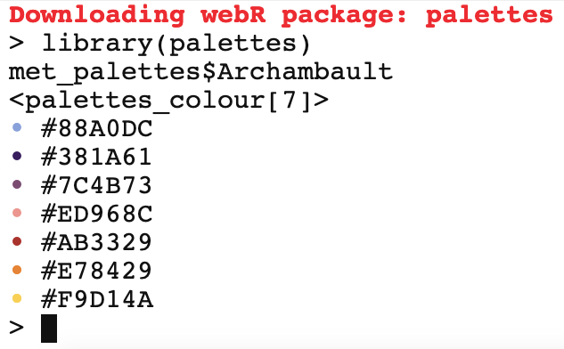

library(palettes)Overview
I am proud to announce that version 0.2.0 of the palettes package is now on CRAN. You can install it with:
install.packages("palettes")palettes is an R package that makes working with colour vectors and colour palettes easy and fun. Here’s what’s new in version 0.2.0:
New printing options!
The package website site has gotten a new article showcasing colour palette packages made with palettes™ by the community.
The GitHub repository and package website now have instructions for installing both the release and development versions in WebR applications.
Error messages now use cli pluralization, thanks to a pull request from @olivroy.
Minor improvements to documentation throughout the package.
If this is your first time hearing about palettes, the package website is the best place to learn more: https://mccarthy-m-g.github.io/palettes/index.html
Printing, however you like
The main purpose of version 0.2.0 was to add a variety of global options to adjust the printing behaviour of colour vectors and palettes. See help("palettes-options", package = "palettes) for a list of all the available options and their default values. I’m very happy with how this turned out, and am excited to hear what you think about these new features!
By default, colour vectors and colour palettes print like this:
met_palettes$Archambault#> <palettes_colour[7]>
#> • #88A0DC
#> • #381A61
#> • #7C4B73
#> • #ED968C
#> • #AB3329
#> • #E78429
#> • #F9D14A
This looks nice, but due to the font choice on tidytales the colour preview symbols are a bit too small (whereas in RStudio they’re a nice size). This brings us to the first and flashiest new option—you can now change the symbol used for colour previews with the palettes.print_symbol option:
If you look at the source code for my first post about palettes, you can see that I actually ended up using JavaScript to change the font for symbols so they would look better. Needless to say, that was an annoying solution.
options(palettes.print_symbol = "block")
met_palettes$Archambault#> <palettes_colour[7]>
#> ▇ #88A0DC
#> ▇ #381A61
#> ▇ #7C4B73
#> ▇ #ED968C
#> ▇ #AB3329
#> ▇ #E78429
#> ▇ #F9D14A
A list of all the available symbols and their names can be printed with list_colour_symbols():
list_colour_symbols()#> ── options(palettes.print_symbol = ...) ────────────────────
#> • circle_small ⬛ square_large
#> ● circle ▇ block
#> ⚫ circle_medium █ block_full
#> ⬤ circle_large ⬩ diamond_small
#> ⬬ ellipse_horizontal ◆ diamond
#> ⬮ ellipse_vertical ⬥ diamond_medium
#> ▲ triangle_up ⬟ pentagon
#> ▼ triangle_down ⬢ hexagon
#> ◀ triangle_left ★ star
#> ▶ triangle_right ♥ heart
#> ▪ square_small ☺ smiley
#> ■ square ෴ moustache
#> ◼ square_mediumFive other options are available:
palettes.print_hex: Logical setting whether to print hex codes in colour previews.palettes.print_alpha: Logical setting whether to print the hex code alpha channel in colour previews.palettes.print_sep: Character string to separate colours by in colour previews.palettes.print_width: Integer setting the maximum number of colours on a line in colour previews.palettes.print_index: Logical setting whether to print the index of the first colour on each line in colour previews.
You can set multiple options together for unique printing styles. Once you find a configuration you like, you can add it to your .Rprofile dotfile to have it persist across R sessions on a global or per-project basis. Here are two examples I thought looked nice:
# Print colour vectors compactly.
options(
palettes.print_symbol = "circle_large",
palettes.print_hex = FALSE,
palettes.print_width = 5
)
met_palettes$Archambault#> <palettes_colour[7]>
#> ⬤⬤⬤⬤⬤
#> ⬤⬤
# Mimic the appearance of a character vector.
options(
palettes.print_symbol = FALSE,
palettes.print_hex = TRUE,
palettes.print_sep = ", ",
palettes.print_width = 10,
palettes.print_index = TRUE
)
met_palettes$Archambault#> <palettes_colour[7]>
#> [1] #88A0DC, #381A61, #7C4B73, #ED968C, #AB3329, #E78429, #F9D14AFeel free to share your own configurations down below in the comments!
Community articles
One of the main goals of palettes is to make it easy for anyone to make their own colour palette package. I’m happy to report that palettes seems to be achieving this goal. Here’s a testimonial from Howard Baek, creator of the hutchplot package, which provides colour palettes and logos for the Fred Hutchinson Cancer Center:
The creation of hutchplot was a straightforward process that involved following the step-by-step instructions outlined in the “Creating a colour palette package” vignette provided by the palettes R package.
To celebrate this, I’ve added a Community section to the package website, with a new article showcasing colour palette packages made by the community—including hutchplot, and the warwickplots package by Ella Kaye. If you ever make a colour palette package with palettes in the future, please let me know if you’d like it added to the showcase.
If you’re curious how I made the listing table of packages for the showcase, I’m using the gh and desc packages to get and read each package’s DESCRIPTION file from their GitHub repository, then using the gt and fontawesome packages for the table—with some additional CSS code to make it responsive for smaller screens.
The benefits of making a colour palette package with palettes
As I explained in my first post about palettes, the current approach most people use when making a colour palette package is to copy the source code from other colour palette packages, then apply revisions to that code for their own package. That’s a lot of duplicated effort for something as simple as shipping a set of hex colour codes in an R package, and it can also lead to feature disparities between different colour palette packages.
But palettes provides a better way: Colour palette packages made with palettes exist solely for the purpose of distributing colour palettes and get access to all the features of palettes for free. What this means for the hutchplot and warwickplots packages is that (1) Howard and Ella can simply inform their users of the new version of palettes—they don’t need to update any code in hutchplot or warwickplots; and (2) the only thing users of hutchplot and warwickplots need to do to begin using the new printing features is update palettes.
WebR
WebR? WebR! Like most people, I’m stoked about the WebR project, which makes it possible to run R code in the browser without the need for an R server to execute the code. If you’ve been following the project, you are likely also aware of two recent advancements that make the wizardry that is WebR available to mere mortals like me:
- The R for WebAssembly (r-wasm) project now builds WebAssembly binaries for most CRAN packages (article, Shiny app)
- R-universe now builds WebAssembly binaries for all R-universe packages (article)
Which means you can now install the release or development version of palettes for use in WebR applications with:
# Install CRAN version from r-wasm
install.packages("palettes", repos = "https://repo.r-wasm.org")
# Install development version from R-universe
install.packages(
"palettes",
repos = c("https://mccarthy-m-g.r-universe.dev", "https://repo.r-wasm.org")
)You can try this out for yourself in the WebR REPL app. Here’s a screenshot to show it working:

How sweet is that? Huge thank you to George Stagg and Jeroen Ooms for making this possible!
What’s next?
palettes now has over 3600 known downloads—it’s exciting to see the userbase grow, so thank you to everyone who’s given it a try! In future versions I would like to:
- Add functions for manipulating colour palettes
- Add an interpolation function for bivariate colour scales
If you have other suggestions, requests, or would like to contribute, please file an issue on GitHub.

Michael McCarthy
Thanks for reading! I’m Michael, the voice behind Tidy Tales. I am an award winning data scientist and R programmer with the skills and experience to help you solve the problems you care about. You can learn more about me, my consulting services, and my other projects on my personal website.
Session Info
─ Session info ───────────────────────────────────────────────────────────────
setting value
version R version 4.2.2 (2022-10-31)
os macOS Mojave 10.14.6
system x86_64, darwin17.0
ui X11
language (EN)
collate en_CA.UTF-8
ctype en_CA.UTF-8
tz America/Vancouver
date 2024-02-05
pandoc 2.14.0.3 @ /Applications/RStudio.app/Contents/MacOS/pandoc/ (via rmarkdown)
quarto 1.2.475 @ /usr/local/bin/quarto
─ Packages ───────────────────────────────────────────────────────────────────
package * version date (UTC) lib source
palettes * 0.2.0 2024-02-05 [1] CRAN (R 4.2.2)
sessioninfo * 1.2.2 2021-12-06 [1] CRAN (R 4.2.0)
[1] /Users/Michael/Library/R/x86_64/4.2/library/__tidytales
[2] /Library/Frameworks/R.framework/Versions/4.2/Resources/library
──────────────────────────────────────────────────────────────────────────────Citation
BibTeX citation:
@online{mccarthy2024,
author = {Michael McCarthy},
title = {Palettes 0.2.0, Now in Print},
date = {2024-02-05},
url = {https://tidytales.ca/posts/2024-02-05_palettes-v0.2.0},
langid = {en}
}
For attribution, please cite this work as:
Michael McCarthy. (2024, February 5). palettes 0.2.0, now in
print. https://tidytales.ca/posts/2024-02-05_palettes-v0.2.0
Comments